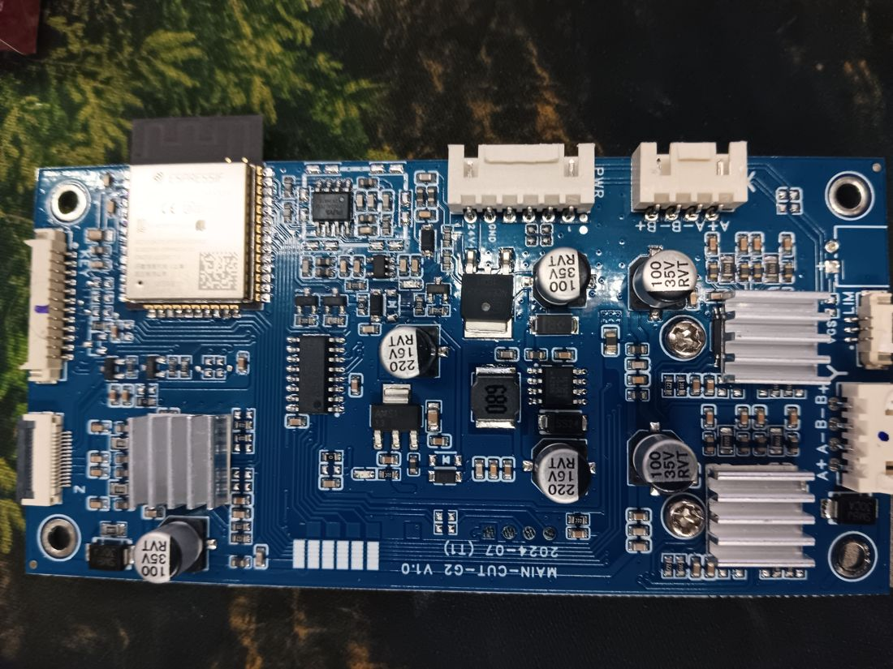
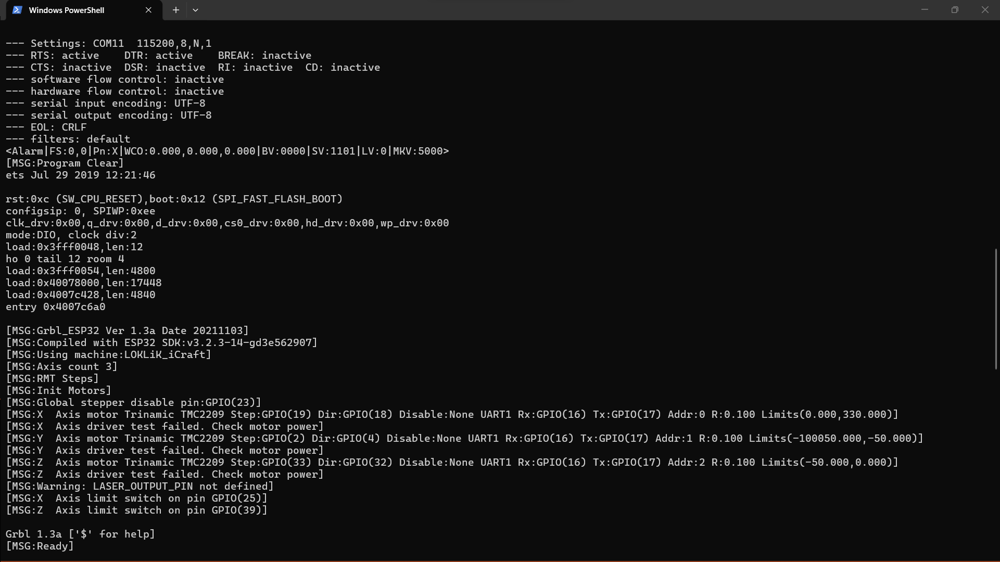
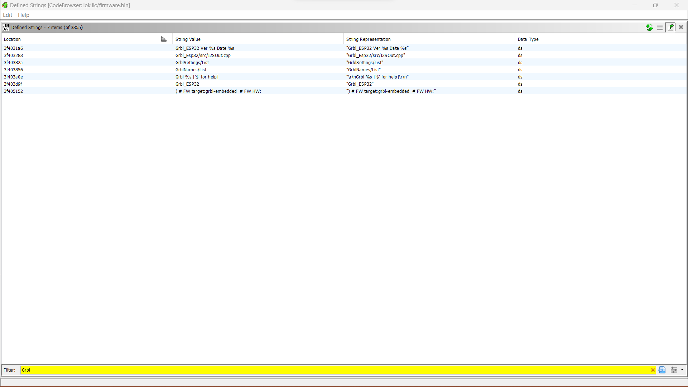
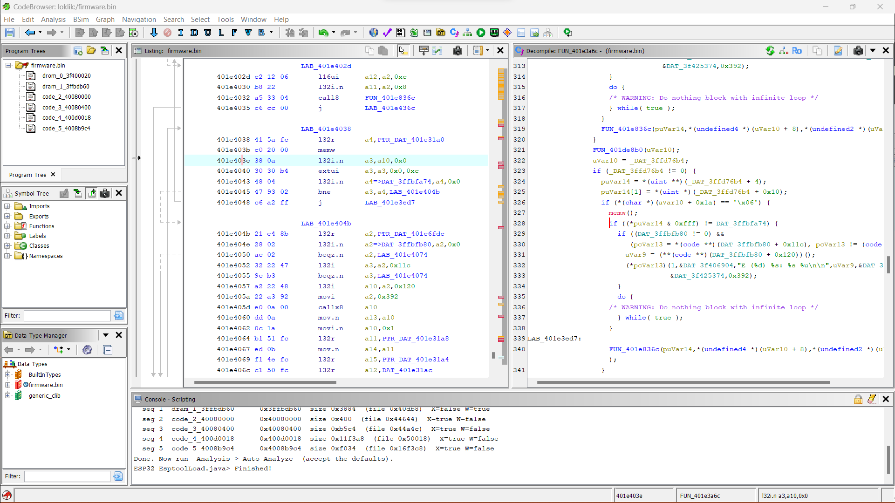
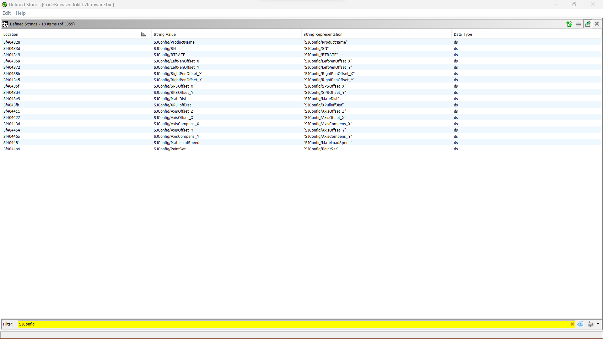
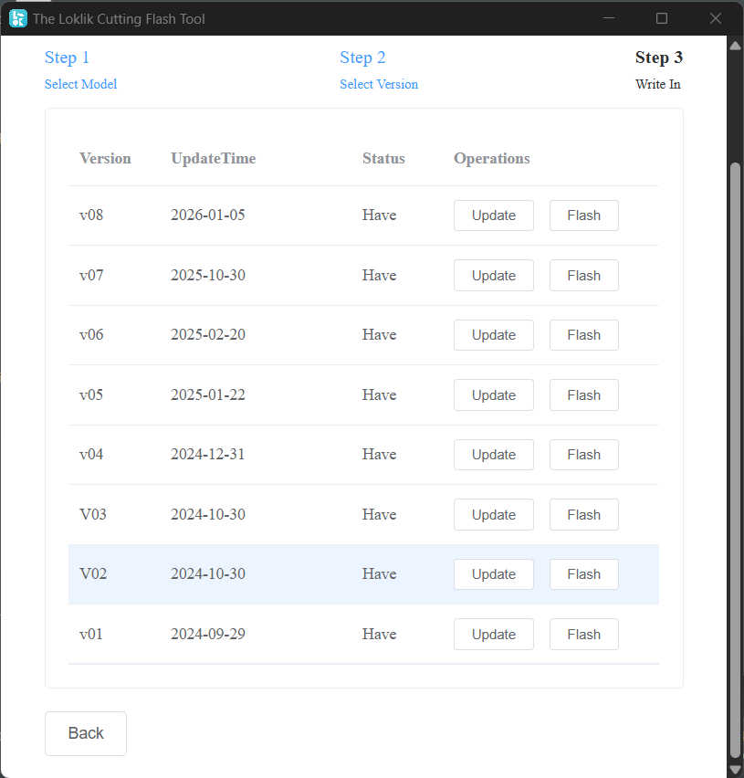
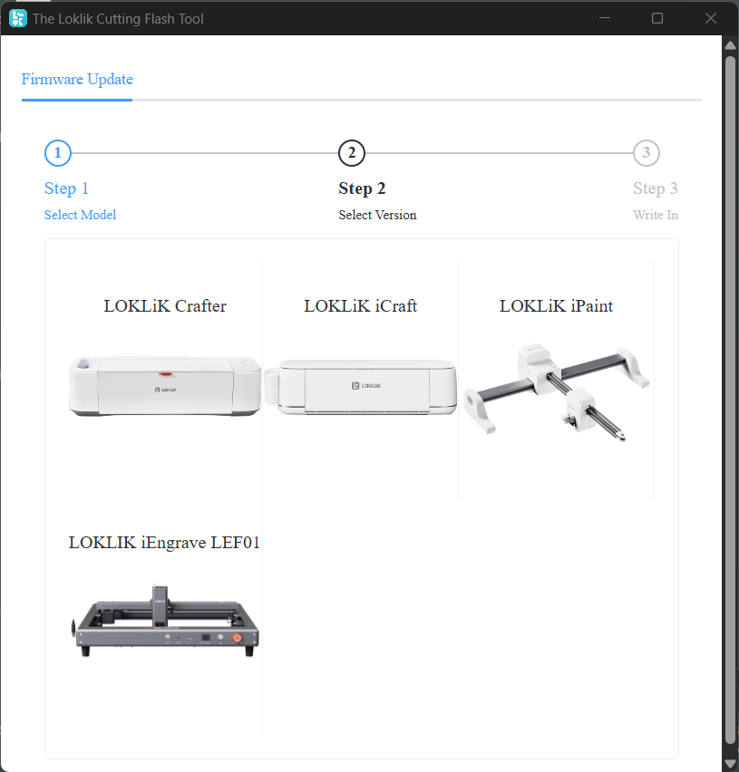

Case file · kilkol
The LOKLiK iCraft's brain is a modified build of Grbl_Esp32 — an open-source CNC firmware licensed under the GPLv3. The vendor ships it behind a login, strips the name off it, and won't hand over the source. Here is the evidence, and how to check it yourself.
It’s not a guess. The firmware says its own name and version on boot, that version matches the upstream GPLv3 project character-for-character, and the vendor distributes it with no source, no offer of source, and no attribution — while their own app credits every other open-source component it uses. The fix is simple: publish the source.
The iCraft is marketed as a closed cutting machine. Firmware arrives only through LOKLiK’s login-gated IdeaStudio software and a standalone updater. Nowhere in the box, the marketing, or the app is there any mention of Grbl, of open source, or of a license. The clear message: this is our proprietary product, use our tools.

Then the machine spoke for itself.
Connected to the controller’s serial port, the firmware announces exactly what it is — every single power-up:
>>> reset [MSG:Grbl_ESP32 Ver 1.3a Date 20211103] [MSG:Using machine:LOKLiK_iCraft] [MSG:Axis count 3] [MSG:Ready]

Grbl_ESP32 is the name of the upstream open-source project. 1.3a is its version. 20211103 is its build date. Using machine: is Grbl_Esp32’s own configuration mechanism. The product never told you any of this — the firmware did.
Pull the printable strings out of any of the firmware images the vendor distributes and the project’s identity is everywhere — including a path straight from the upstream source tree, left behind by the compiler:
Grbl_ESP32 Ver %s Date %s Grbl %s ['$' for help] [VER:%s.%s:%s] Grbl_Esp32/src/I2SOut.cpp # upstream source path, compiled in ) # FW target:grbl-embedded # FW HW: '$H'|'$X' to unlock
The whole settings system uses Grbl_Esp32’s own vocabulary too — Homing/Feed, Spindle/Delay/SpinUp, GCode/LaserMode, X/StepsPerMm — matching the upstream definitions exactly.


The open-source Grbl_Esp32 source code defines its version and build date like this:
const char* const GRBL_VERSION = "1.3a"; const char* const GRBL_VERSION_BUILD = "20211103";
The LOKLiK device reports Ver 1.3a Date 20211103. The version and the build-date string are identical. This isn’t a similar idea independently reinvented — it is a build of that exact upstream release. And that release is unambiguously licensed:
This is a modified build. Across the eight firmware versions the updater distributes, the vendor added an entire settings namespace — SJConfig — that exists nowhere in upstream Grbl_Esp32. (SJ matches the vendor’s own software namespace, com.sjtech.)
And it’s actively developed: versions v07/v08 grow the axis-compensation feature into an 11-point table per axis, taking the SJConfig key set from 18 entries to 62. This vendor layer is part of the work — and therefore part of the source the license requires them to release.

LOKLiK’s desktop application ships license notices for the various open-source components it uses — so the vendor plainly understands open-source attribution and is capable of it. Yet the GPLv3 firmware that is the machine’s entire brain appears in none of it: no Grbl, no Grbl_Esp32, no GPL, anywhere in the product. The result is that a customer cannot learn the firmware is free software, and cannot get its source.
| Obligation under GPLv3 | Provided? |
|---|---|
| Complete Corresponding Source for the conveyed binary (§6) | no |
| Written offer of source, or source alongside the binary (§6) | no |
| License & attribution notices preserved/conveyed (§4–5) | no |
| Firmware readable / not encryption-locked | yes — plaintext |
Every distributed version identifies as Grbl_ESP32 1.3a, targets the LOKLiK_iCraft machine, and carries the vendor’s SJConfig layer. SHA-256 hashes are recorded so the exact artifacts can’t be quietly swapped later.
| Ver | Size | Grbl | SJConfig keys | SHA-256 (first 16) |
|---|---|---|---|---|
| v01 | 1,562,832 | 1.3a | 18 | 2091abe2949bc5a1 |
| v02 | 1,563,824 | 1.3a | 18 | 218426d65c605794 |
| v03 | 1,565,200 | 1.3a | 18 | 8648ca52a90fe5c3 |
| v04 | 1,565,232 | 1.3a | 18 | 8bd858845cdbf8b0 |
| v05 | 1,565,664 | 1.3a | 18 | 57d3e4dafdb08fa4 |
| v06 | 1,565,728 | 1.3a | 18 | 7a30fc95315b5c44 |
| v07 | 1,219,808 | 1.3a | 62 | 0380548b95299aa9 |
| v08 | 1,219,744 | 1.3a | 62 | 9f8d03d1ff7cbee2 |
Full hashes, the esptool segment map, and the complete methodology are in the accompanying report (REPORT.md).


Everything here is reproducible from a retail device with free tools. There is no flash encryption to defeat.
# 1. read the firmware off the ESP32 (plaintext, no encryption) esptool read_flash 0 0x800000 backup.bin # 2. confirm it's an esptool image + see its layout esptool --chip esp32 image-info firmware_v06.bin # 3. look at who it says it is strings firmware_v06.bin | grep -E "Grbl_ESP32|LOKLiK_iCraft|SJConfig" # 4. compare to upstream — github.com/bdring/Grbl_Esp32 # Grbl.h: GRBL_VERSION "1.3a" / GRBL_VERSION_BUILD "20211103"
For a full read, the firmware loads cleanly into Ghidra as Xtensa:LE:32 once the six esptool segments are placed at their addresses; the boot-banner and SJConfig strings cross-reference straight into the vendor’s modifications.
LOKLiK built their product on GPLv3 software. The license they chose to build on asks one thing in return for that gift: when you ship the binary, ship the source. That means the Complete Corresponding Source for the LOKLiK iCraft firmware — all distributed versions, the modified Grbl_Esp32 tree, the LOKLiK_iCraft machine definition, the SJConfig layer, and the scripts and config needed to build and flash it — under the GPLv3, with credit to the upstream authors.
It costs them nothing they’re entitled to keep. It’s simply the deal. Honor it, and there’s nothing here to fight about.